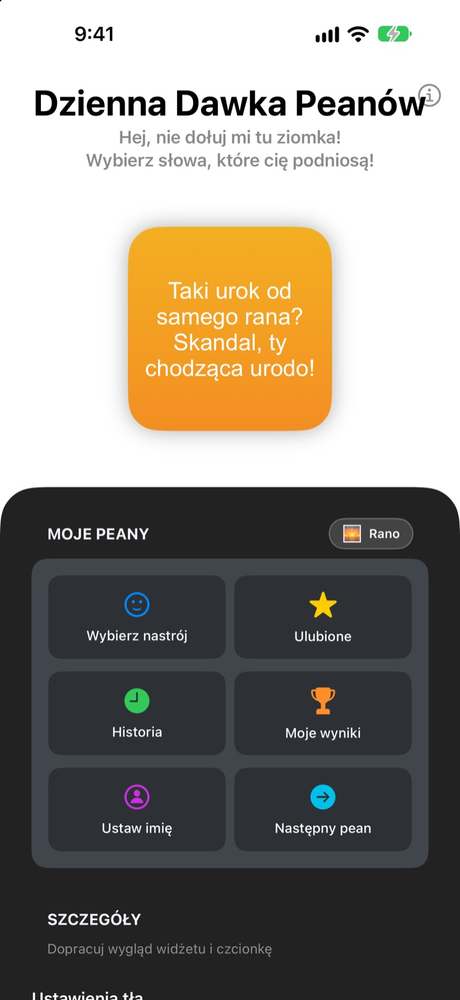
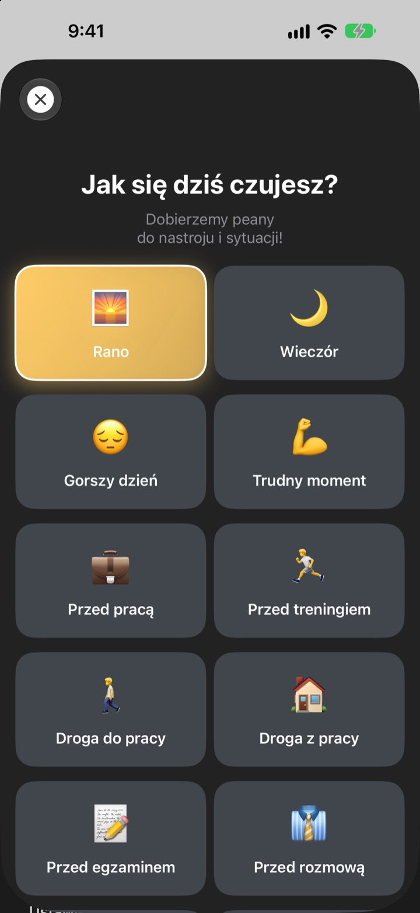
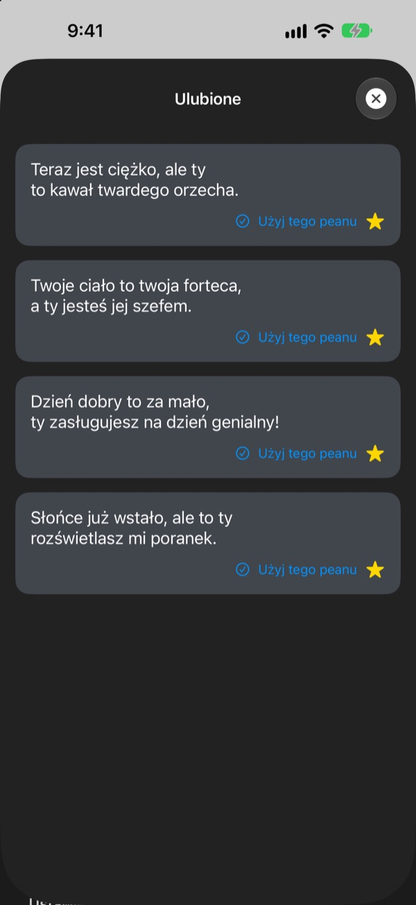
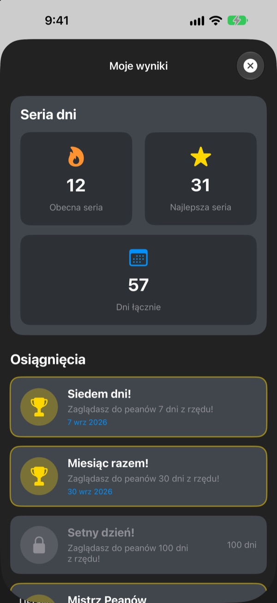

Za każdym razem, gdy bierzesz telefon,
czeka na Ciebie największy fan
Dzienna Dawka Peanów to widżet, który celowo chwali Cię za bardzo. Rano pean na rano, przed rozmową pean na rozmowę. Czcionkę, kolory i tło ustawisz po swojemu.
Jeden zakup i masz wszystko. Bez subskrypcji i bez reklam.

Odbierz pean od razu
Wybierz nastrój, a widżet pokaże pasujący pean. Stuknij Następny pean, żeby wylosować jeden z 281.
Kto jest Twoim najsurowszym krytykiem? Może Ty?
W drodze do pracy, przed rozmową, w drodze z pracy głos w głowie głównie marudzi. Dzienna Dawka Peanów kilka razy dziennie staje po Twojej stronie prosto z ekranu początkowego, odrobinę bardziej, niż wypada. Gdy tylko się uśmiechniesz, wraca też trochę pewności siebie.
Pean na każdy nastrój
Wybierz spośród 14 nastrojów i sytuacji, takich jak Rano, Droga do pracy, Trudny moment, Przed rozmową czy Przed randką, a pasujący pean od razu pojawi się na widżecie. Nie możesz się zdecydować? Jest też Losowo.

Zachowaj ulubione
Stuknij gwiazdkę, żeby zapisać pean w Ulubionych, a wcześniejsze znajdziesz w Historii. Stuknij Użyj tego peanu, a od razu trafi na widżet.

Zaglądaj codziennie, a licznik rośnie
Każdy dzień, w którym zajrzysz, wydłuża Twoją serię. Za 7, 30 i 100 dni z rzędu oraz za 50 i 100 dni łącznie odblokujesz osiągnięcia.

Zaczynasz w trzech krokach
- 1
Wybierz nastrój
Otwórz
Wybierz nastróji stuknij ten, który pasuje. - 2
Dopasuj widżet
W szczegółach wybierz czcionkę, kolor tekstu, tło i odświeżanie.
- 3
Dodaj go do ekranu początkowego
Przytrzymaj ekran początkowy, stuknij + i znajdź Dzienną Dawkę Peanów.
Widżet po Twojemu
- Czcionka
- 13 czcionek, m.in. Futura, Georgia i Marker Felt
- Kolor tekstu
- Dowolny, jaki lubisz
- Tło
- Gradient z dwóch kolorów albo jedno z wbudowanych zdjęć
- Wyrównanie
- Do lewej, do środka lub do prawej
- Interlinia
- Gęściej albo luźniej
- Odświeżanie co
- Nowy pean co 5, 15 lub 30 minut
Rozmiar widżetu wybierasz przy dodawaniu go do ekranu początkowego.
Kupujesz raz i gotowe
Aplikacja
- 281 peanów na 14 nastrojów
- Widżet na ekran początkowy w Twoim stylu
- Ulubione i Historia
- Serie i osiągnięcia
Wesprzyj twórcę
- Wybierz mały, średni lub duży napiwek
- Niczego nie odblokowuje. To po prostu podziękowanie
Tylko jeśli i kiedy zechcesz.
Bez subskrypcji, bez dodatkowych zakupów, bez reklam.
Częste pytania
Jak dodać widżet?
Przytrzymaj puste miejsce na ekranie początkowym, aż ikony zaczną się trząść, stuknij + u góry, wyszukaj Dzienną Dawkę Peanów i wybierz rozmiar.
Jak wybierany jest następny pean?
Gdy wybierzesz nastrój, pean do niego od razu trafia na widżet. Potem widżet w wybranym rytmie pokazuje losowy pean spośród wszystkich 281. W aplikacji możesz też stuknąć Następny pean i przełączyć sam.
Czy mogę zmienić czcionkę albo odświeżanie?
Tak. W szczegółach zmienisz czcionkę, kolor tekstu, tło, wyrównanie, interlinię i odświeżanie: co 5, 15 lub 30 minut.
Widżet nie zmienił się od razu.
O tym, kiedy przerysować widżet, decyduje iOS, więc czasem lekko spóźnia się względem wybranego rytmu. Otwórz aplikację i zamknij ją, a widżet się odświeży.
Jak działa seria?
Każdy kolejny dzień, w którym zobaczysz pean, wydłuża serię. W Moje wyniki widać bieżącą serię, rekord, łączną liczbę dni i osiągnięcia.
Zniknęły mi ulubione i historia.
Wszystko jest zapisane tylko na Twoim urządzeniu, więc nie przenosi się po usunięciu aplikacji ani zmianie telefonu. Jeśli niczego nie usuwałeś, a i tak zniknęło, napisz do nas maila.
Czy moje dane są gdzieś wysyłane?
Nie. Aplikacja nie zbiera danych osobowych. Ulubione i historia zostają na Twoim urządzeniu.
Jak zgłosić błąd lub zaproponować pomysł?
Prosto przez Napisz do twórcy w aplikacji, mailem albo w wiadomości na Instagramie @lee25_ios. Odpiszemy, gdy tylko zobaczymy.
Pytania albo pomysły? Napisz na leeo@kakao.com.